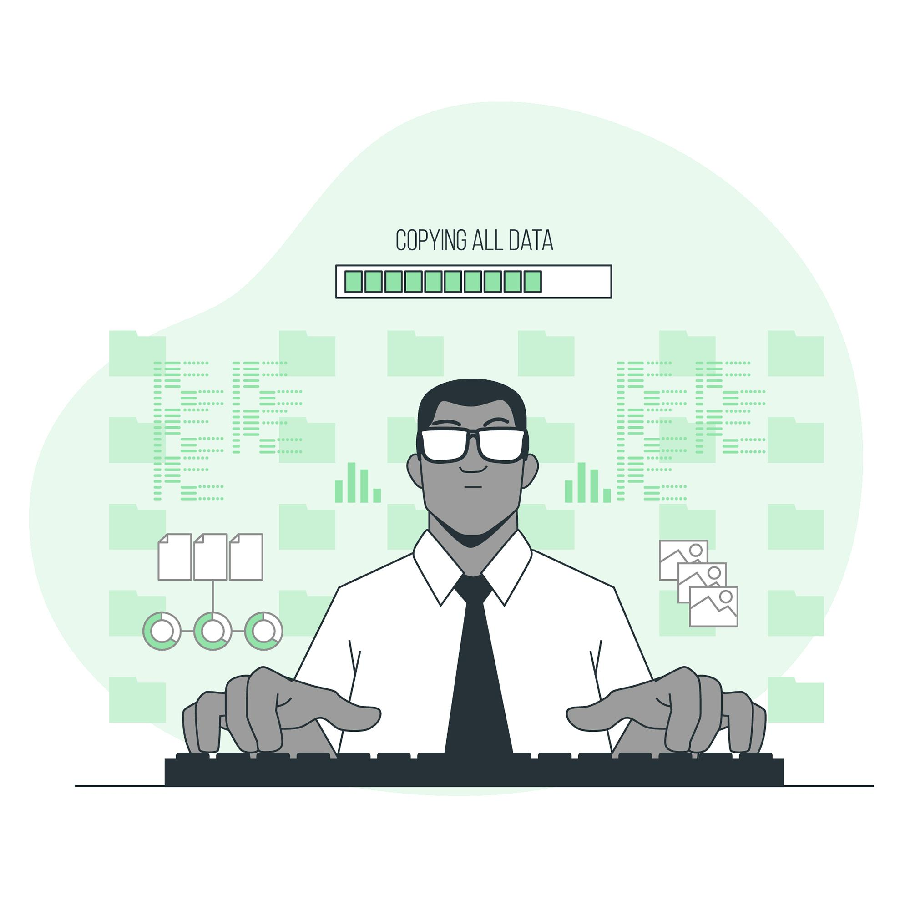

Types of Hacking:
Here are some of the most common types of hacking:
- Phising
- Virus
- Cookie Theft
- Distributed Denial-Of-Service(DDoS)
- DNS Spoofing
- Social Engineering
- Malware Injection Devices
- Cracking Password

Ethical Hacking, also referred to as “white hat hacking,” “Pen Testing,” or simply “ethical hacking,” plays a critical role in maintaining the security and integrity of computer systems and networks. It involves cybersecurity practices that use hacking tools and techniques to identify vulnerabilities and weaknesses in computer systems and networks with the primary objective of preventing unauthorized access to systems and sensitive data, protecting against cyber-attacks, and ensuring the security of an organization’s assets.
Here are some of the most common types of hacking:
Hacktivism is often associated with the term Cyberwar, and is sometimes associated with “Cyber Terror”. Hacktivism basically means an act of hacking or breaking into a computer system for some purpose be it political or social. The person who performs this is called a hacktivist.
The main purpose of Hacktivism is to leak an organization’s information and aim to send messages through the organization’s activities, that are considered bad by the hacker. But which the intention of this practice comes under the criminal act.
1. DDoS or DoS attack: DDoS or DoS attack is a threat that requires active measures by the operators, which are mostly the Internet service providers, to keep the traffic from getting routed to the adversary’s server. In such cases, the attack can be attributed to a large-scale denial of services attack, also known as a distributed denial-of-service (DDOS).
2. Replicating Website: This technique aims at duplicating a legitimate website with a slightly different URL, in order to get around the censorship on that site. The attacker duplicates the site to a different URL so the content is still visible.
3. Defacement of Website: The attacker manipulates the code and software of the website to show an error, this may be threatening and present the attacker’s point of view to the visitors.
4. Data Breach: In this situation, an insider who has access to sensitive information of the organization, may sense a negative image of the entity in the minds of users and make that information public.
5. Doxing: This involves gathering sensitive information about a person or organization information, through methods like Social Engineering, and making it public.
1. Anonymous: Anonymous is a random group of hackers who come together to achieve various goals. It is not limited to any particular sector or type of right. The group operates on the dark web, which is not accessible to the public. The group is not limited to cybercrime either. They are also known for being active in fighting corruption and supporting freedom of expression.
2. LulzSec:Five members of the Anonymous group started LulzSec in 2011. The most significant attack of this group was on taking down the Federal Bureau of Investigation’s website (FBI) in 2011.
3. WikiLeaks: This group was started by Julian Assange in 2006 to host the leaked documents The first documents released on their site were around 80,000 documents of the US war in Afghanistan in 2010 and were followed by another 4,00,000 documents of war in Iraq.
Scanning in ethical hacking is a network exploration technique used to identify the systems connected to an organization’s network. It provides information about the accessible systems, services, and resources on a target system.
Scanning is often used during vulnerability assessment when probing weaknesses in existing defenses.
There are two ways of scanning:
Scanning is more than just port scanning, but it is a very important part of this process. There are many tasks that can be performed with a scanning tool.
1. TCP connect scan: This is a scan that sends TCP SYN packets to each port on the target system, waiting for an RST/ACK. This is a steal their type of scan because it does not show the open ports on the target system. The last port that responds is its open port, and you can use this to your advantage to determine which ports are open.
2. TCP syn port scan:This is a similar type of scan, but the packets are TCP SYN packets and not TCP ACK. This type of scan sends packets to ports that are open and waiting for a reply.
3. Network Scanning:Network scanning is used to identify the devices and services that are running on a target network, determine their operating systems and software versions, and identify any potential security risks or vulnerabilities. Network scanning can be performed manually or automated using software tools, and can target specific systems or an entire network.
4. Vulnerability Scanning:Vulnerability scanning is a process of identifying, locating, and assessing the security vulnerabilities of a computer system, network, or application. This process is performed using automated software tools that scan for known vulnerabilities, as well as weaknesses in the configuration or implementation of the system being tested.